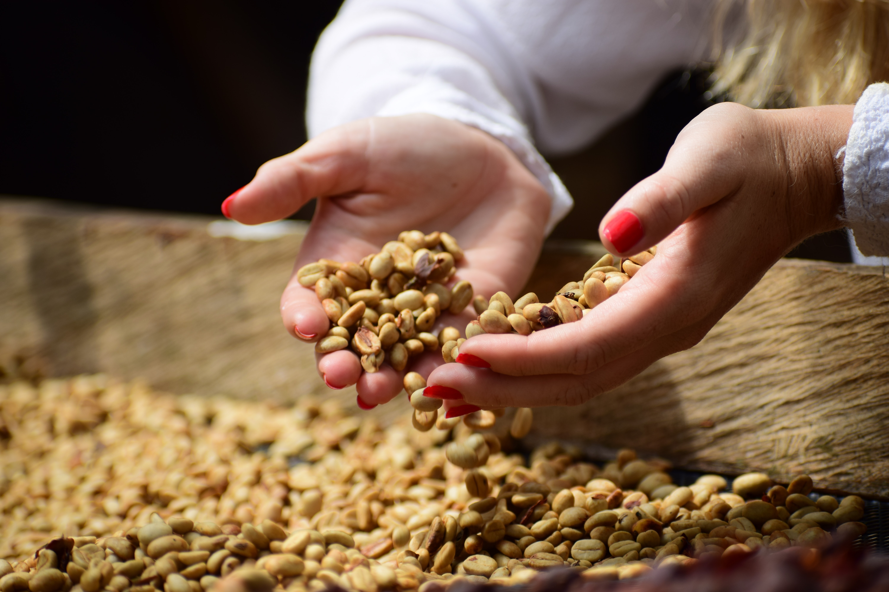

Coffee beans are being roasted in a machine.

A farmer is holding green coffee beans in hands.
A cup of espresso.
Five different level of roast.
Dark roasted beans.
A farmer is holding colorful coffee beans in hands.
Lightly roasted beans.
A friednly Barista.